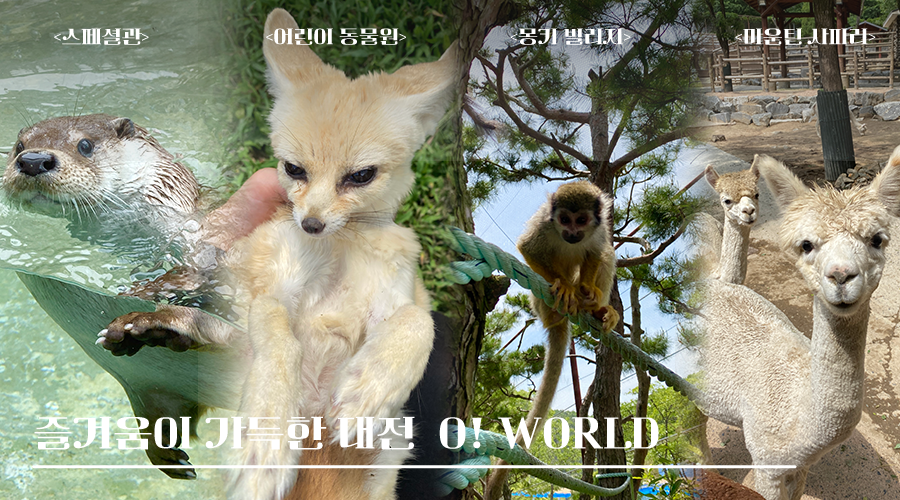

환상의 대전 O! WOLRD

관람시 유의사항
안전하고 즐거운 관람을 위해, 이것만은 꼭! 지켜주세요.
동물 친구들 소개
동물 친구들을 만나기 전에 미리 알아볼까요?
 | 사막여우 (Vulpes zerda) 서식지 건조기후의 북아프리카 사막지대 평균 수명 10-13년 특징 사막여우는 모든 개과 동물들 중 가장 작은 종이며, 매우 큰 귀를 가졌다. 사막여우는 보통 짝을 이루어산다. 대개 3월과 4월 사이 한번에 두 마리에서 다섯 마리 새끼를 낳는다. 임신기간과 수유기간 중에 수컷은 암컷과 새끼들을 돌보고 보호한다. 사막여우의 굴은 부드러운 모래에 만들어지고 단순한 구조를 가지고 있다. 오직 단단한 지반에서만 복잡한 구조의 굴을 만든다. 현재 오월드에는 약 14마리의 사막여우가 살고 있다. |
|
 | 미어캣 (Suricata suricatta) 서식지 남아프리카 인근 평균 수명 12-14년 특징 보통 20-30마리 정도가 집단생활을 하며, 여러 통로와 입구가 있는 굴에서 생활을 한다. 유대감이 강하기 때문에, 여왕이 아이를 낳으면, 다른 암컷과 수컷들이 지키고, 젖을 먹이며 함께 키워나간다. 미어캣이 두발로 서서 주위를 둘러보는 행동을 하는 이유는 주위를 경계하고, 천적을 감시하기 위해서이다. 현재 오월드에는 6마리가 살고 있다. |
|
 | 왈라루 (Macropus robustus) 서식지 오스트레일리아 초원지대 평균 수명 10-19년 특징 유대목 캥거루과 캥거루속의 동물들중에서 중형인 종이다. 수컷이 암컷보다 체구가 더 크며, 색깔도 더 진함으로, 외관으로도 쉽게 구분이 가능하다. 주로 단독생활을 하고 연중 임신이 가능하며, 새끼는 약 2cm정도의 아주 작은 체구로 태어나, 어미의 육아낭 속에서 230-270일 정도 생활한다. 현재 오월드에는 8마리의 왈라루가 살고있다. |
|
 | 알다브라 육지거북 (Aldabrachelys gigantea) 서식지 알다브라, 세이셸 제도 평균 수명 80-120년 특징 알다브라 거북은 현존하는 거북 종류중 2번째로 크기가 매우 큰 거북이다. 식사는 주로 채식을 하며, 당근,배추 같은 야채류부터 사과,참외,오렌지등 과일류까지 먹는다. 오월드에 있는 거북이는 세이셸 제도에서 왔으며, 현재 119살정도로 추정한다. 반신욕을 좋아하기 때문에 사육장에 작은 물 웅덩이가 하나 있다. 종종 웅덩이에 앉아서 밖을 구경한다. |
|
 | 자아넨 염소 (Saanen) 서식지 스위스 및 산악지역 평균 수명 80-120년 특징 자아넨은 하얀색의 털을 가지고 있는게 특징이며, 스위스 산악지대가 원산지이다. 보통 몸무게는 암컷이 45-60 수컷이 70-90kg 정도까지 나간다. 성질이 얌전한 편이며, 원산지의 특성에 맞게 추위에는 강하나, 고온다습한 환경에는 취약하다. 오월드에는 다양한 염소종 10마리가 살고있으며, 가장 사고뭉치인 "율무"가 자아넨 종이다. |
동물 친구들 생활
동물 친구들의 생활을 살짝 들여다볼까요?
※ 각 비디오마다 음량이 조금씩 다를 수 있습니다. 음량에 유의해주세요.
| 타마린 원숭이 8월에 태어난 타마린 2마리이다. 본래 부모가 교대로 업고 다니는데, 부모가 키우던 중 아이들을 버려서, 인공포육을 진행했다. |
사막여우 사막여우들이다. 보통 저녁에 더 활동적이다. 강아지처럼 꼬리를 흔들면서 사람을 반기는 특징이 있다. |
다람쥐 원숭이 다람쥐원숭이의 식사시간이다. 보통 바나나,당근 등 다양한 채소와 야채류를 먹는다. 특히 빵을 좋아한다. |
점박이 물범 점박이물범의 식사시간이다. 보통 식사마다 동태 5마리씩 먹는다. 약을 급여할땐, 동태 입에 넣어 던져준다. |